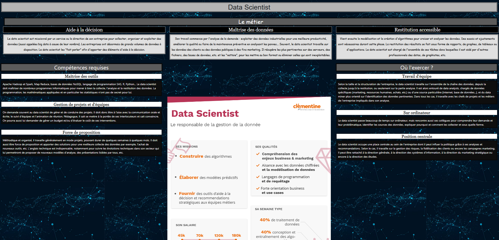
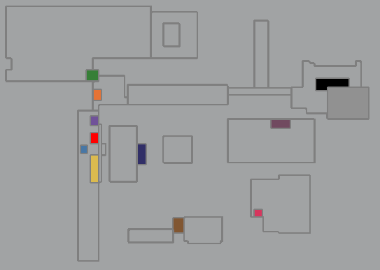

Projets réalisés

Projet AP1
Premier site web développé.
Travailler en mode projet

Projet AP2
Implémentation d'une base de données dans un site web.
Gérer le patrimoine informatique
Répondre aux incidents et aux demandes d’assistance et d’évolution
WordPDévelopper la présence en ligne de l’organisationress
Travailler en mode projet

Cluedo
Création d'un 'jeu' pour le lycée.
Travailler en mode projet